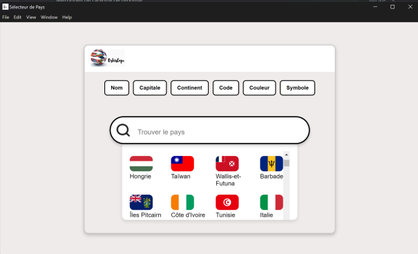

Mes projets
Bienvenue dans mon univers digital, où chaque projet raconte une histoire !
-
 Site IUTBUT2
Site IUTBUT2 -
 Site LPLBUT2
Site LPLBUT2 -

-
 PortfolioBUT1
PortfolioBUT1 -

- 
-
Bilan de stageBUT3
Podcast 1 : L'info à l'antenne
Cyberattaques et Intelligence Artificielle dans les Conflits Modernes
Dans ce podcast, Manon GLAUDE la présentatrice, est accompagnée de quatre experts : Hiba OUMSID chroniqueuse et journaliste en cybersécurité, Sidi ESSAADOUNI, pentesteur, Nour Elhouda BOUAMLAT, journaliste spécialisée en intelligence artificielle, et Lina MEDANI experte en IA. Ensemble, nous discutons de l'impact de ces nouvelles formes de guerre, apportant des exemples concrets et des réflexions sur l’avenir de la cybersécurité et de la régulation.
Introduction des concepts clés
Nous commençons par définir les termes “cyberattaque” et “intelligence artificielle”. Une cyberattaque, selon IBM, est un acte visant à voler, modifier ou détruire des données via un accès non autorisé à un réseau. Quant à l’IA, elle désigne la capacité d’une machine à imiter les comportements humains, comme le raisonnement et la planification, selon le parlement Européen.
Les cyberattaques comme armes de guerre
Hiba nous parle de l’attaque MOVEit en 2023, un exemple frappant de cyberattaque à grande échelle. Cette attaque a exploité une faille dans un logiciel de transfert de fichiers, permettant à des cybercriminels de dérober des données sensibles dans des secteurs vitaux. Sidi ajoute une dimension technique à cet incident, expliquant comment une telle vulnérabilité a pu perturber des infrastructures critiques.
L'IA dans la guerre cognitive
Nour nous expose comment l’IA est utilisée dans la guerre cognitive, notamment à travers des Deepfakes. Elle évoque l’exemple d’une vidéo truquée de Volodymyr Zelensky en mars 2022, dans laquelle il appelait ses soldats à se rendre, mais qui, en réalité, était manipulée par des hackers pour semer le chaos. Lina, quant à elle, nous explique comment des Deepfakes sont créés à l’aide de GANs (réseaux antagonistes génératifs), rendant difficile la détection des manipulations.
Débat sur la régulation et les stratégies de cybersécurité
Nous débattons ensuite de la régulation des cyberattaques par le droit international. Bien qu’il existe des principes de bases, comme ceux concernant la guerre et la souveraineté des États, la législation reste en retard, notamment concernant l’usage de l’IA dans les attaques. Nous explorons également les stratégies de cybersécurité : prévention, détection et réponse aux incidents. Sidi met l'accent sur l’importance des tests d'intrusion réguliers et de la coopération internationale pour mieux se préparer aux menaces.
Propositions pour prévenir et atténuer les cyberattaques
Enfin, nous réfléchissons ensemble à des stratégies pour atténuer l’impact des cyberattaques. Lina propose de renforcer l’utilisation de l’IA pour la détection en temps réel, tandis que Nour insiste sur la sensibilisation et la coopération internationale. Hiba plaide pour un renforcement des lois et de la coopération entre États, et Sidi nous rappelle l’importance des tests d’intrusion et de la mise en place de bases de données communes pour mieux se défendre.
Conclusion
Nous concluons cet épisode en ouvrant la discussion sur le rôle des grandes entreprises privées comme Amazon et Palantir dans la course aux technologies militaires et l'intelligence artificielle. Nous remercions nos invités et nos auditeurs, et nous invitons tout le monde à rester à l'écoute pour nos prochains épisodes.
Sources consultées :
Podcast 2 : Cybersécurité, sommes-nous protégés ?
Dans cet épisode, Chemsedine Benhaddou reçoit plusieurs experts pour discuter des enjeux de la cybersécurité et des cyberattaques, un sujet d'actualité qui menace aussi bien les individus que les entreprises. Aux côtés de :
Loïc Li, expert en protection informatique
Loïc Li met en avant l’évolution des cyberattaques et les menaces majeures comme le phishing, les ransomwares, les attaques DDoS et les vulnérabilités Zero-Day. Il insiste sur la nécessité d’une vigilance accrue, de mises à jour régulières et d’une collaboration entre entreprises et autorités pour renforcer la cybersécurité face à des attaques de plus en plus sophistiquées.
Lina Medani, hackeuse éthique
Lina Medani partage des conseils sur la détection proactive des failles de sécurité. Elle met en garde contre les risques liés à l'ingénierie sociale et conseille de toujours vérifier l'authenticité des e-mails avant de cliquer sur des liens ou d'entrer des informations sensibles. Elle recommande également de tester régulièrement la sécurité de ses systèmes grâce à des outils de simulation d'attaque.
Azzedine Hatem, spécialiste en cybersécurité des entreprises
Azzedine Hatem commence par discuter des stratégies à mettre en place au sein des organisations pour prévenir les cyberattaques. Il souligne l'importance de la formation continue des employés, des tests de pénétration réguliers et de l'instauration de politiques de cybersécurité robustes.
Yanis Krim, victime d’une cyberattaque
Yanis Krim raconte son expérience personnelle. Il explique comment il a été piraté après avoir cliqué sur un lien malveillant dans un e-mail prétendant venir de sa banque, ce qui a conduit à la perte de plusieurs fonds. Yanis met en lumière la facilité avec laquelle les cybercriminels peuvent exploiter les faiblesses humaines et souligne l'importance d'une vigilance constante face aux cybermenaces.
Le podcast se conclut avec un rappel sur la nécessité de prévenir, de coopérer à l'échelle internationale et de sensibiliser à la cybersécurité pour mieux se défendre contre les menaces.